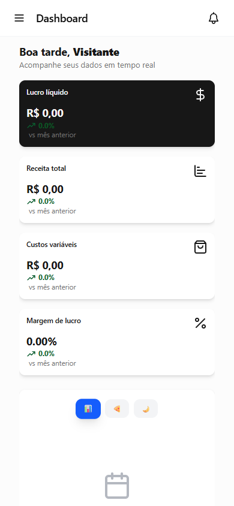
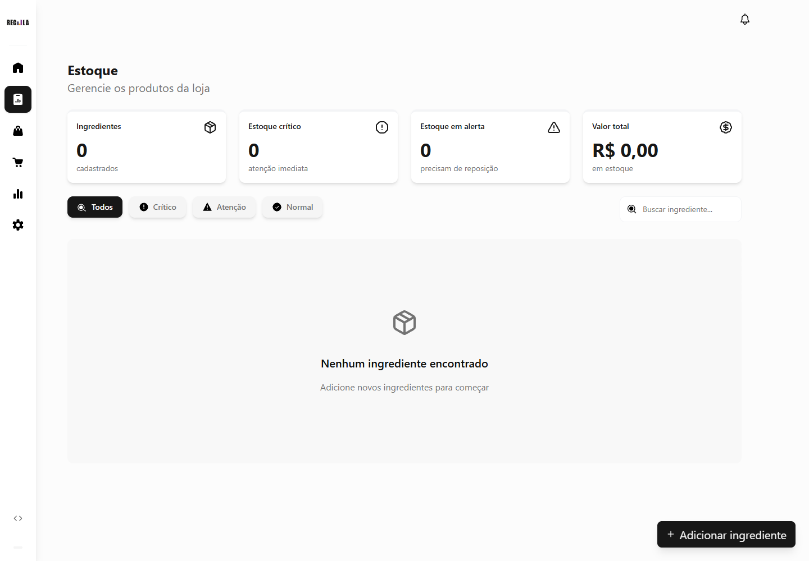
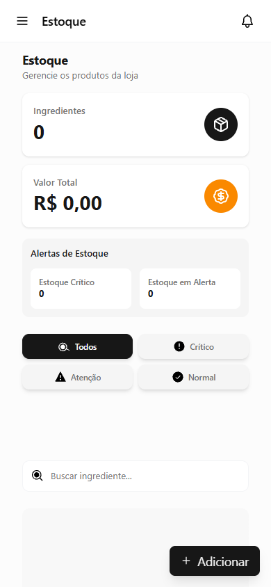
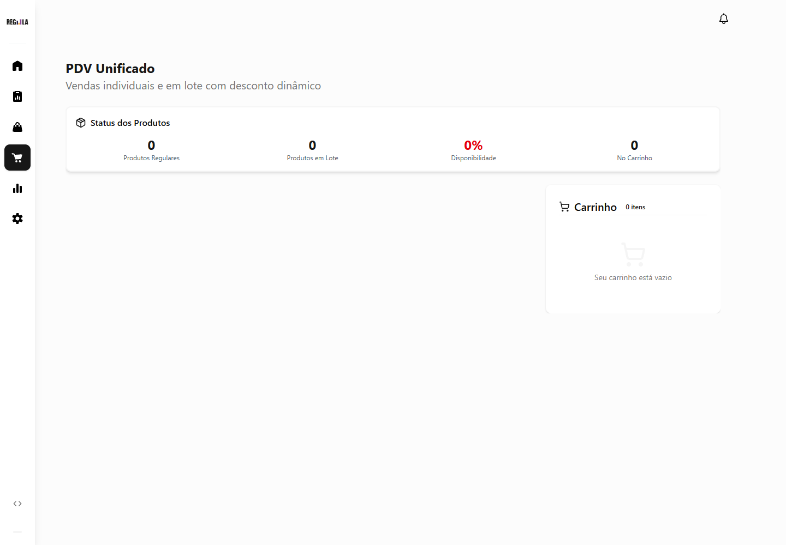
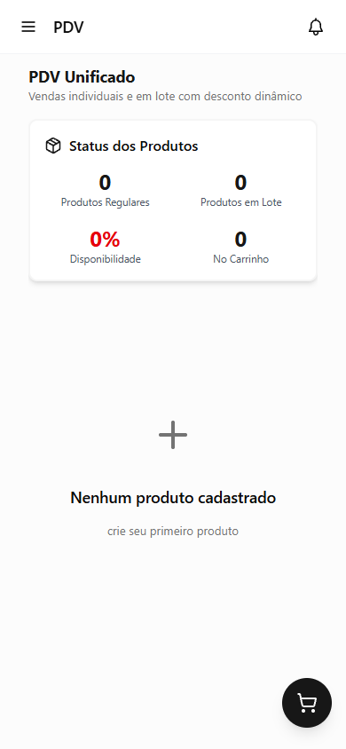

01
O problema
Operar sem perder o fio.
Unificar controle de estoque, vendas, preços e caixa em uma experiência clara para a operação diária.
- estoque
- vendas
- caixa
Regula · caso 03
Dashboard administrativo e PDV com fluxos de estoque, caixa e precificação.

O problema
Unificar controle de estoque, vendas, preços e caixa em uma experiência clara para a operação diária.
A decisão
Uma arquitetura em Next.js com componentes reutilizáveis, formulários tipados e estados globais previsíveis reduz a fricção do uso.
O resultado
Aplicação full interface para transformar a rotina comercial em decisões rápidas, consistentes e legíveis.
Três vistas da mesma promessa: dar contexto suficiente para cada decisão da operação.
Indicadores financeiros para enxergar o dia antes que ele acelere.
visão geral
Uma leitura operacional para encontrar o que precisa de atenção.

controle
Formulários que organizam regras sem criar distância da rotina.

catálogo
O projeto combina tipagem, validação e componentes de interface para que a experiência permaneça flexível sem perder previsibilidade.
Um sistema comercial construído para acompanhar o ritmo real de quem decide, vende e organiza todos os dias.